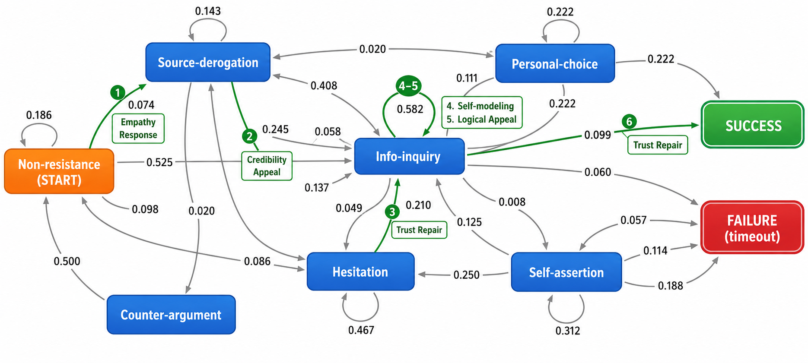

COMPASS
基於對話狀態轉移預測與對話路徑分析之說服式對話系統
Contrastive Outcome-guided Modeling of Path-Aware State Shifts for Persuasive Dialogue Systems
研究問題
比較候選策略對後續對話路徑與終局結果的影響，將策略選擇由單輪回應提升為多步決策問題。
研究方法
以對話狀態、候選策略及成功／失敗終局成本建立有限視界決策模型，並在固定資料集與模擬設定下進行路徑及敏感度分析。
實驗結果
在 CraigslistBargain 資料集與 GPT‑3.5 模擬設定下，COMPASS 成功率為 74.86%，成功對話平均 4.858 輪；結果限於該固定實驗條件。
核心貢獻
把策略選擇從單輪回應，提升為兼顧成功推進與失敗風險的有限視界對話路徑決策。
